Tondafoto

Mirar más allá de la vida
Gustavo Tondin, también conocido como Tonda, nos planteó el desafío de crear un case de fotografía que escapara de lo tradicional. Su mirada opta por capturar momentos auténticos del entorno en vez de inducir poses convencionales, revelando una forma única de conectar con las vidas que habitan cada escena.
Las formas coloridas de su identidad reflejan tanto su personalidad vibrante como su pasión por las estéticas antiguas, traduciendo su manera particular de ver y vivir la vida, arraigada en una apreciación profunda por todas las formas del arte.


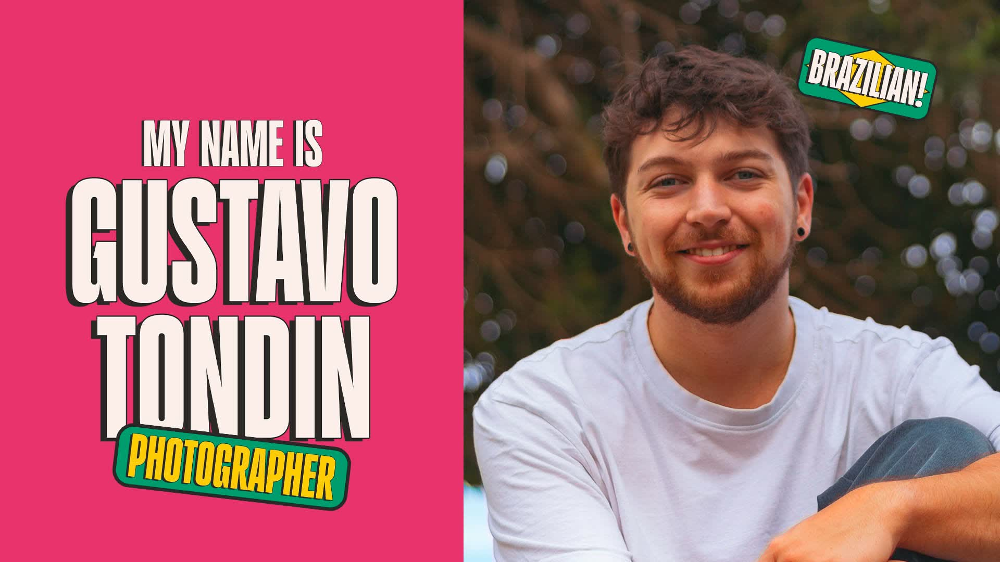


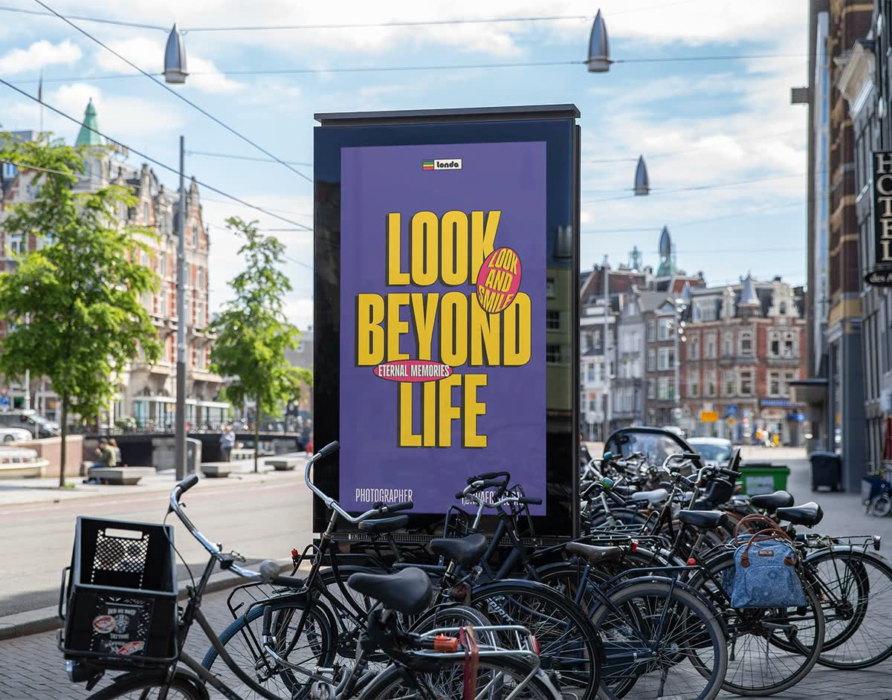
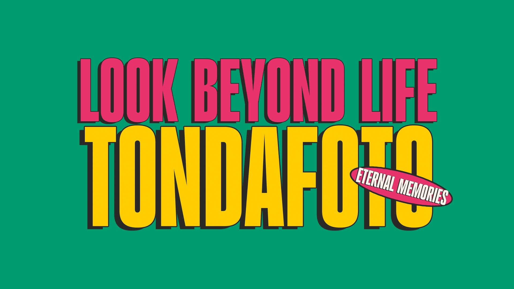
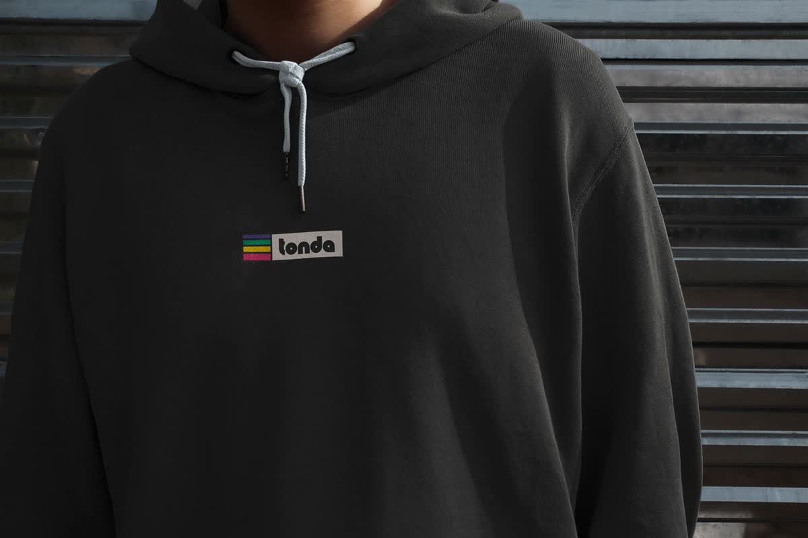
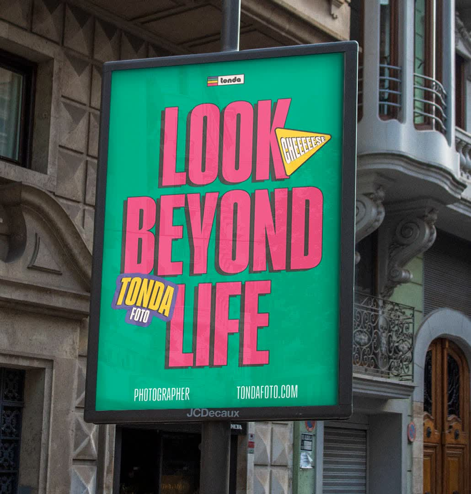
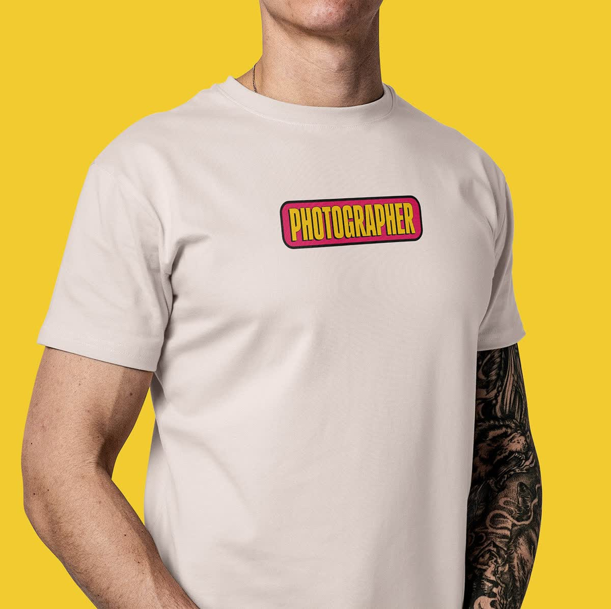
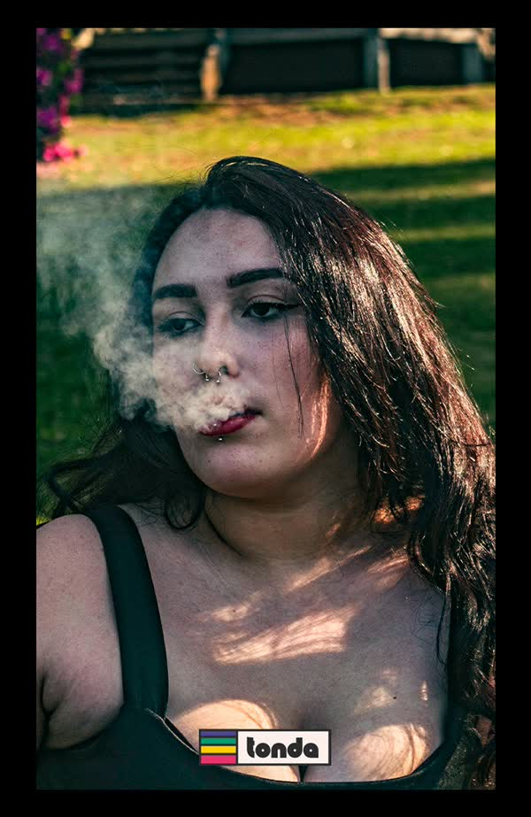
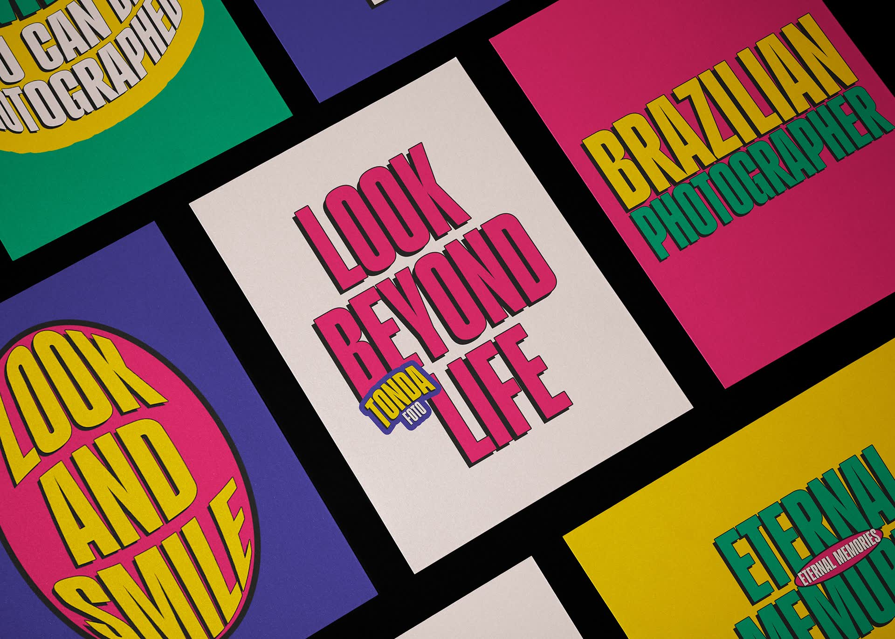
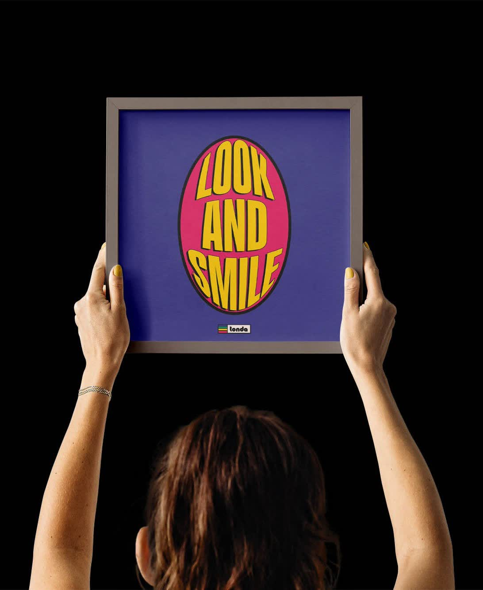
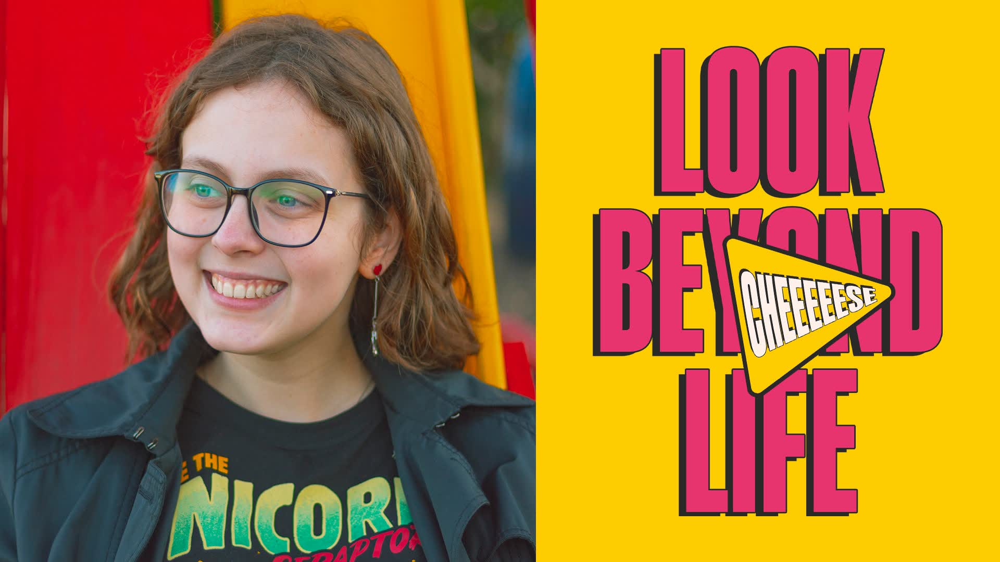
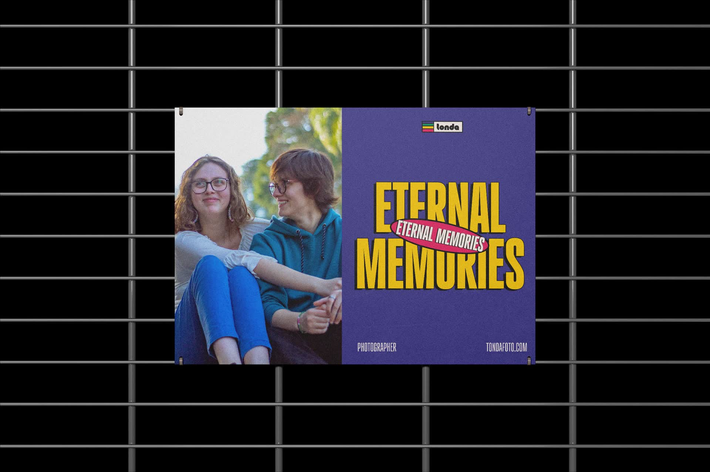
Créditos
Cliente
Tondafoto
Año
2022
Mi rol
Dirección creativa · Fotografía